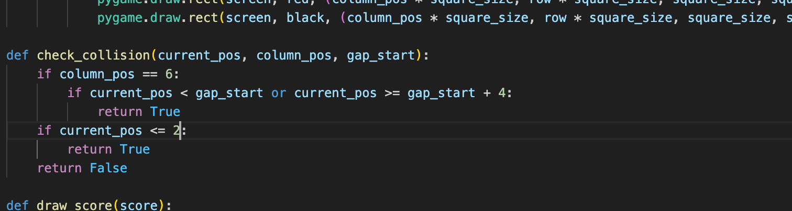

Task 2 - Death Detection
Development
Death detection
is a vital part of any video game. There needs to be stakes. For our game we needed two ways to die, one
being touching the floor and the other being touching the columns. In theory this requires two simple
checks. One check sees if when the columns is being drawn on the same x position of the bird, the bird
and the red squares are being drawn on the same block. This is easy enough as the player has a constant
x position (the y position changes). The other check would simply be if the player_pos variable is below
a certain number.
